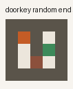
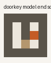
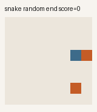
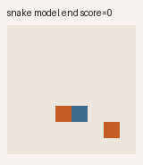
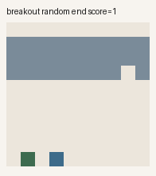
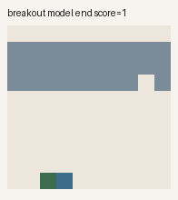

Snake 8×8
Relative menu: turn left, continue straight, turn right. Observation is ordered body cells, heading, and food. The teacher is a legal-move, nearest-food heuristic. Survival without food does not count.
2026-09-17 · post #8
One shared Qwen head that picks from a typed menu. DoorKey mostly works. Snake and Breakout still look like the random policy.
Issue #18 asked for a Jev-inspired supervised decision model, not TypeSafe’s private RLCD stack. We trained Qwen2.5-0.5B-Instruct plus one scalar candidate-scoring head on three structured games: 8×8 Snake, fully observed DoorKey-5x5, and a MinAtar-faithful Breakout. The same weights score every menu. DoorKey reaches the goal on 18 of 20 held-out episodes. Random never does. Snake eats 0.15 food against the teacher’s 11.7. Breakout breaks 1.5 bricks against 15.3. Receipts on the issue add up to $0.68.
Each state is a short instruction: game id, a fixed objective, a compact observation, and the candidate actions for that game. The backbone encodes every pair. A linear head returns one scalar per candidate. Softmax is only inside that state’s menu. Candidate strings are model inputs. We do not score the first token of an arbitrary action name and call it a decision.
Stage A freezes Qwen and trains 897 head parameters. Stage B adds LoRA rank 16 on q_proj, k_proj, v_proj, o_proj, gate_proj, up_proj, down_proj — 8.8 million trainable of 503 million. Grouped KL against the teacher’s soft labels. Ties stay ties. This is behavioral cloning. It is not RLCD.
Relative menu: turn left, continue straight, turn right. Observation is ordered body cells, heading, and food. The teacher is a legal-move, nearest-food heuristic. Survival without food does not count.
All seven MiniGrid actions. The board, key, locked door, and goal are in the text. A BFS teacher keeps every equally short first action. This is not the default partially observed MiniGrid benchmark.
Public minimal IDs: 0 no-op, 1 left, 3 right. Observation is paddle, ball, last position, direction, and the brick mask — not raw RGB. The teacher is a short-rollout intercept. Follow-the-ball matches it on this seed set (15.3).
Headline run run_fbac11a02be7662387a54c834561393a on RunPod A100-SXM, $0.33. 900 labeled states per game, five head epochs, three LoRA epochs. Head tensors changed. The reloaded head reproduced scores. 20 held-out episodes per game, matched seeds.
| Policy | Snake | DoorKey | Breakout |
|---|---|---|---|
| Random | 0.05 | 0.00 | 1.15 |
| Trained scorer | 0.15 | 0.90 | 1.50 |
| Teacher | 11.7 | 1.00 | 15.3 |
| Follow-ball | — | — | 15.3 |


Random, last frame. Score 0.

Model, last frame. Score 1. Observation mode: structured.

Random, last frame. Score 0.

Model, last frame. Score 0. The 0.15 mean is other seeds.

Random, last frame. Score 1.

Model, last frame. Score 1. Live inference was not served.
One file. Hand compute.cx/SKILL.md to your agent, plus this post’s overlay.
curl -fsSL https://raw.githubusercontent.com/theoriclabs/letsusecompute/main/posts/jev-games/train.py -o train.py
compute run train.py::train --gpu cheap --dry-run
compute run train.py::train --gpu cheap --timeout 2400 --wait --args '{"sample": true}'
compute run train.py::train --gpu cheap --timeout 2400 --wait --args '{"states_per_game": 900, "episodes": 20, "epochs_head": 5, "epochs_lora": 3}'Dry-run only prints the upload plan. --gpu cheap and --gpu cheapest are both accepted. Issue #1 still says two active runs; the current public limits page says one. This account admitted one run at a time.
Sample run_9c6ce2dd7976a1d01bd3498cf9d43429 on Vast RTX-3090, $0.01, already proved the pipeline. A 900-state attempt died mid-DoorKey collection because unique-observation filtering could not fill the quota — rpt_3952dda48bf11a78e704e03f33ec9df1. After that fix, Vast run_2a4d241c2f3294894269a9c42b633375 reached reload_ok=True and then became lost with no artifacts, $0.06 — rpt_ebe8faf5ad588d49c435ed5e39612862. The numbers you can download are from the A100 rerun. CLI --wait also dropped an IncompleteRead twice; the jobs kept going.
No Hub checkpoint. No hf secret was set. The adapter and head are in the run artifact if you want theoriclabs/jev-games-0.5b later.
It does not reproduce Jev or RLCD. It does not read pixels. TypeSafe’s Doom demo uses structured state; so does this post. A smooth replay is not real-time control — p95 latency was not the target we hit, and we did not host an endpoint. The softmax values are policy probabilities over a menu, not the probability of finishing the game. We evaluated 20 episodes per game, not 100. Snake and Breakout still lose to their teachers. Counting the 0.5B backbone, this is a shared codec, not a file you email once.